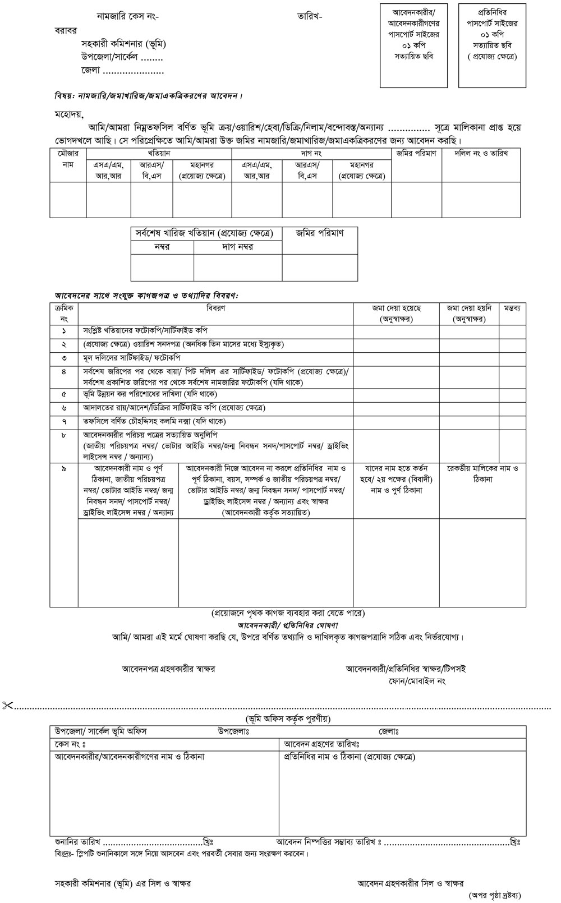

মিউটেশন/নামজারী কি:
কোন মালিক কোন জমির মালিকানা লাভ করার পর তার নাম সংশ্লিষ্ট খতিয়ানে অন্তর্ভূক্ত করা বা তার নিজ নামে নতুন খতিয়ান খোলার যে কার্যক্রম তাকে মিউটেশন (Mutation) বা নামজারী বলে । দীর্ঘ সময়ের ব্যবধানে জরিপ ও রেকর্ড সংশোধন প্রক্রিয়া পরিচালিত হয় বলে দুই জরিপের মধ্যবর্তী সময়ে উত্তরাধিকার, দান, বিক্রয় ইত্যাদি হস্তান্তরের প্রক্রিয়ার ফলে ভূমি মালিকানার পরিবর্তন জরিপে প্রণীত খতিয়ানে প্রতিফলিত করার জন্য অর্থাৎ খতিয়ান হালনাগাদ করার জন্য রাষ্ট্রীয় অধিগ্রহণ ও প্র্রজাস্বত্ব আইন ১৯৫০ এর ১৪৩ ধারায় কালেক্টরকে ক্ষমতা প্রদান করা হয়েছে। জমা খরিজ, একত্রীকরণ ও নামজারীর মাধ্যমে কালেক্টর অন্তবর্তীকালীন সময়ে খতিয়ান সংশোধন ও হালকরণ করে থাকেন । কালেক্টরের এ ক্ষমতা মাঠ পর্যায়ে বর্তমান সহকারী কমিশনার (ভূমি) গণ প্রয়োগ করে থাকেন । সুতরাং অন্তবর্তীকালীন রেকর্ড পরিবর্তন, সংশোধন ও হালকরণের প্রক্রিয়া নামজারী ও জমাখারিজ নামে আখ্যায়িত ।
মিউটেশন এর উপকারিতাঃ
১। ভূমির মালিকানা হালনাগাদ হয় ।
২। ভূমি উন্নয়ন কর আদায় করা সহজ হয় ।
৩। খতিয়ান হালনাগাদ থাকার ফলে জরিপ কাজে সুবিধা হয় ।
৪। সরকারের খাস জমি সংরক্ষণে সুবিধা হয় ।
কেন মিউটিশন করতে হয়:
১৯৫০ সালের রাষ্ট্রীয় অধিগ্রহণ ও প্রজাস্বত্ব আইনের ১১৬, ১১৭ ও ১৪৩ ধারা অনুযায়ী জমা একত্রীকরণ, জমাখািরজ ও নামজারী প্রক্রিয়া অর্থাৎ মিউটেশন সম্পূর্ণ করা হয় । নিম্নলিখিত কারণে মিউটেশন ও রেকর্ড সংশোধন করা প্রয়োজনঃ
১। ভূমি মালিকের মৃত্যূতে উত্তরাধিকারগণের নামে নামজারী । ২। রেজিষ্ট্রি দলিলমূলে জমি হস্তান্তরের কারণে নামজারী
৩। ভূমি উন্নয়ন করের বকেয়া বাবদ নিলাম খরিদার জন্য নামজারী ৪। স্বত্ব মামলার রায় /ডিক্রির কারণে নামজারী
৫। জমি অধিগ্রহণের (এল,এ কেস) কারণে নামজারী। ৬। খাস খতিয়ানভূক্ত করণের ফলে নামজারী।
৭। সরকার কর্তৃক ক্রয়কৃত বা অন্য কোন খাস জমি বন্দোবস্তের কারণে নামজারী।
৮। পরিত্যাক্ত বা নদী সিকস্তির কারণে ভূমি উন্নয়ন কর মওকুফের কারণে নামজারী।
৯। নদী পয়স্তিজনিত কারনে রেকর্ড সংশোধনের জন্য নামজারী। ১০। দান বা উইল এর কারণে নামজারী।
১১। বিনিময় মামলার সম্পত্তির ক্ষেত্রে নামজারী।
বিলম্বে নামজারী করার ফলাফল:
১. ভূমি উন্নয়ন কর আদায় ও প্রদানে জটিলতার সৃষ্টি হয়।
২. বকেয়া ভূমি উন্নয়ন কর আদায়ের জন্য সার্টিফিকেট মামলা দায়ের হয়। সার্টিফিকেট মামলা নিস্পত্তি না হওয়া পর্যন্ত নামজারি সম্ভব নয়। ফলে নামজারি আরো বিলম্ব হয়। সঠিকভাবে ভূমি সংক্রান্ত বিবরণ পাওয়া যায় না।
৩. জমি ক্রয় বিক্রয়ের জটিলতার সৃষ্টি হয়। সর্বোপরি মালিকানা বা দখল প্রমাণের ক্ষেত্রে নামজারি সংক্রান্ত কাগজাপত্রাদি গুরুত্বপূর্ন কাগজ হিসাবে বিবেচিত হয়ে থাকে।
উত্তরাধিকার মুলে মিউটেশনঃ
ভূমি মালিকের মৃত্যুতে বা উত্তরাধিকার সূত্রে প্রাপ্ত জমির মালিকানা পরিবর্তনের জন্য সরাসরি আবেদনের ক্ষেত্রে নামজারী রেজিস্টার ৯ এর ১ম খন্ড ব্যবহৃত হয়।
হস্তান্তর মুলে মিউটেশনঃ
ভূমি হস্তান্তর আইন এবং রেজিস্ট্রেশন আইনের বিধান অনুসারে স্থাবর সম্পত্তি বিক্রয়, দান বা ওয়াকফ ইত্যাদি জনিত কারণে হস্তান্তর দলিল রেজিস্ট্রি করতে হয় এবং এ হস্তান্তর দলিলের মাধ্যমে অথবা সাব-রেজিস্ট্রি অফিসের থেকে এল,টি নোটিশের প্রাপ্তি সাপেক্ষে নামজারীর রেজিস্ট্রার ৯ এর ২য় খন্ড ব্যবহৃত হয়।
মিউটেশন এর ধরণঃ
১। শুধু নামজারী বা নামপত্তনঃ
কোন একজন রেকডীয় মালিকের নামের পরিবর্তে ঐ একই খতিয়ানে পরবর্তী গ্রহীতাও ওয়ারিশগণের নামভূক্ত হলে তা রাস্ট্রীয় অধিগ্রহণ ও প্রজাস্বত্ব আইনের ১৪৩ ধারা মতে শুধু নামপত্তন বা নামজারী হিসেবে বিবেচিত হবে।
২। নাম পত্তন ও জমা খারিজঃ
কোন দাগের জমি বিক্রয় বা অন্য কোন প্রকার হস্তান্তরের মাধ্যমে বিভক্ত হলে এবং ঐ বিভক্তির জন্য পৃথক হিসাব বা হোল্ডিং খুলে ভূমি উন্নয়ন কর আদায়ের আদেশ হলে তা নামপত্তন ও জমা খারিজ হিসেবে বিবেচিত হবে। এক্ষেত্রে জমির মালিকানার পরিবর্তন হবে এবং পৃথক খতিয়ান এবং হোল্ডিং নম্বর পড়বে। রাস্ট্রীয় অধিগ্রণ ও প্রজাস্বত্ব আইনের ১৪৩ ও ১১৭ ধারা মতে এ প্রক্রিয়ায় নামপত্তন হয়ে থাকে।
৩। নাম পত্তন ও জমাখারিজ একত্রিকরণঃ
কোন ব্যক্তির একই মৌজার ভিন্ন ভিন্ন খতিয়ানে জমি থাকলে উক্ত খতিয়ানগুলোতার অধিকৃত জমি একই খতিয়ানে ভুক্ত করে নামপত্তন করলে অর্থাৎ রেকর্ড সংশোধন করলে তাকে নামপত্তন ও জমা একত্রীকরণ করা বলা হয়। রাস্ট্রীয় অধিগ্রহণ ও প্রজাস্বত্ব আইনের ১৪৩ ও ১১৬ ধারা মতে এ প্রক্রিয়ায় কাজ সম্পদিত হয়।
নামজারীর আবেদনে প্রয়োজনীয় কাগজপত্র:
# ২০/ (বিশ) টাকার কোর্ট ফিসহ মূল আবেদন ফরম।
# আবেদনকারীর ১ (এক) কপি পাসপোর্ট সাইজের ছবি (একাধিক ব্যক্তির ক্ষেত্রে প্রত্যেকের জন্যও প্রযোজ্য)।
# খতিয়ানের ফটোকপি/সার্টিফাইড কপি।
# ধার্যকৃত বকেয়া ভূমি উন্নয়ন কর পরিশোধের রশিদ (দাখিলা)।
# সর্বশেষ জরিপের পর থেকে বায়া/পিট দলিলের সার্টিফাইড/ফটোকপি।
# উত্তরাধিকারসূত্রে মালিকানা লাভ করলে অনধিক তিন মাসের মধ্যে ইস্যুকৃত মূল উত্তরাধিকার সনদ।
(রাষ্ট্রীয় অধিগ্রহণ ও প্রজাস্বত্ব আইনের ১৪৩ বি ধারা মোতাবেক কোন রেকর্ডীয় মালিক মৃত্যুবরণ করলে তাঁর ওয়ারিশগণ নিজেদের মধ্যে একটি বন্টননামা সম্পাদন করে রেজিস্ট্রি করবেন। উক্ত রেজিস্টার্ড বন্টননামাসহ নামজারীর জন্য আবেদন জানাবেন)।
# আদালতের রায়ের ডিক্রির মাধ্যমে জমির মালিকানা লাভ করলে উক্ত রায়ের সার্টিফাইড/ফটোকপি। আপীল হয়ে থাকলে তার তথ্য বা ডিক্রির সার্টিফায়েড/ফটোকপি।
# আবেদনকারীর পরিচয়পত্রের সত্যায়িত অনুলিপি ( জাতীয় পরিচয়পত্র নং/ ভোটার আইডি নং/ জন্ম নিবন্ধন সনদ/ পাসপোর্ট নং/ ড্রাইভিং লাইসেন্স/ অন্যান্য)
নামজারী করার ধাপ সমুহ
১। সহকারী কমিশনার (ভূমি) বরবর সংশ্লিষ্ট জমির রেকর্ড/পর্চা ও মালিকানা অর্জনের বিবরণ সম্বলিত আবেদন দাখিল।
২। সহকারী কমিশনার (ভূমি) কতৃক সরেজমিন তদন্তের জন্য আবেদনটি সংশ্লিষ্ট ইউনিয়ন ভূমি অফিসে প্রেরণ।
৩। ইউনিয়ন ভূমি অফিস কর্তৃক প্রস্তাব/প্রতিবেদন সহকারী কমিশনার (ভূমি) অফিসে প্রেরণ।
৪। সহকারী কমিশনার (ভূমি) কর্তৃক সংশ্লিষ্ট পক্ষগণকে শুনানীর জন্য নোটিশ প্রদান।
৫। নোটিশ প্রাপ্তির পর যাবতীয় মুল কাগজ পত্রের প্রমানাদিসহ আবেদনকারীর শুনানীতে অংশ গ্রহন এবং অত:পর আদেশ প্রদান।
নামজারীর প্রয়োজনীয় ফি:
| ক | আবেদনের সাথে কোর্ট ফি | ২০/- (দশ) টাকা |
| খ | নোটিশ জারী ফি | ৫০/- (পঞ্চাশ) টাকা |
| গ | রেকর্ড সংশোধন বা হালকরণ ফি | ১০০০/-(এক হাজার) টাকা। |
| ঘ | প্রতি কপি মিউটেশন খতিয়ান সরবরাহ বাবদ | ১০০/-(একশত) টাকা |
আবেদন ফি ছাড়া বাকিগুলো ডিসিআরের মাধ্যমে আদায় করা হবে
নামজারীর ক্ষেত্রে সময়সীমা:
৩০ কর্মদিবস (আপত্তি না থাকলে)। (মহানগরের ক্ষেত্রে ৪৫ কর্মদিবস)।
আরও কিছু তথ্য:
# শুনানী গ্রহণকালে দাখিলকৃত কাগজের মূল কপি অবশ্যই আনতে হবে।
# নির্দিষ্ট সময়ের মধ্যে ইউনিয়ন ভূমি অফিসে দখল/প্রয়োজনীয় মালিকানার রেকর্ডপত্র দেখাতে হবে।
# নামজারী খতিয়ান এবং ডিসিআর প্রাপ্তির সাথে সাথে আপনার নামে ইউনিয়ন ভূমি অফিসে হিসাব খোলা নিশ্চিত করুন এবং ভূমি উন্নয়ন কর প্রদান করে দাখিলা নিন।
# প্রয়োজনীয় সহযোগিতা ও যেকোন ধরণের অভিযোগের ক্ষেত্রে সরাসরি সহকারী কমিশনার (ভূমি) এর সাথে যোগাযোগ করুন।
# ভূমি মন্ত্রণালয়ের Website (www.minland.gov.bd) থৈকে বিনামূল্যে ফরম ডাউনলোড করে ব্যবহার করা যাবে।
# SMS সেবা পেতে চাইলে SMS প্রতি ২.০০ টাকা অতিরিক্ত প্রদান করতে হবে।
নামজারী বিষয়ক অধিকার:
# নামজারীর মাধ্যমে নতুন মালিকানা তথা হোল্ডিং সৃষ্টি করার অধিকার(১৯৫০ সালের স্টেট একুইজিশন এন্ড টেন্যন্সি এক্টের ১৪৩ ধারা)
# নির্ধারিত কোর্ট ফি দিয়ে এসি ল্যান্ডের নিকট নামজারীর জন্য আবেদন করার অধিকার(ভূমি ব্যবস্থাপনা ম্যানুয়াল ১৯৯০)
# সংশোধিত খতিয়ান সংগ্রহের অধিকার(ভূমি ব্যবস্থাপনা ম্যানুয়াল ১৯৯০)
# ষড়যন্ত্র করে বা ভুলক্রমে অন্যের নামে নামজারী হয়ে থাকলে তা সংশোধনের অধিকার(১৯৫০ সালের স্টেট একুইজিশন এন্ড টেন্যন্সি এক্টের ১৪৩ ধারা)
# রাজস্ব অফিসারের আদেশে অসন্তুষ্ট হলে তার বিরুদ্ধে জেলা জজ বা অতিরিক্ত জেলা প্রশাসক(রাজস্ব) এর নিকট মামলা করার অধিকার(১৯৫০ সালের স্টেট একুইজিশন এন্ড টেন্যন্সি এক্টের ১৪৭ ধারা)
# আপীলের জন্য সময় পাবার অধিকার (১৯৫০ সালের স্টেট একুইজিশন এন্ড টেন্যন্সি এক্টের ১৪৮ ধারা)
# রিভিশনের অধিকার(যদি আপীল করা না হয়ে থাকে) (১৯৫০ সালের স্টেট একুইজিশন এন্ড টেন্যন্সি এক্টের ১৪৭ ধারা)
# রিভিউ পুন:বিবেচনার অধিকার(১৯৫০ সালের স্টেট একুইজিশন এন্ড টেন্যন্সি এক্টের ১৪৯ ধারা)
# জমির ক্রেতা যদি সমবায় সমিতি বা হাউজিং কোম্পানি হয় তাহলে নামজারীর অধিকার(ভূমি ব্যবস্থাপনা ম্যানুয়াল ১৯৯০ এর অনুচ্ছেদ ৩২৭, ৩২৮)
আইনি প্রতিকারঃ
আপীল: নামজারীর বিশয়ে কোন ব্যাক্তি অসন্তুষ্ট হলে জেলা প্রশাসকের নিকট আপীল করা যাবে (১৯৫০ সালের স্টেট একুইজিশন এন্ড টেন্যন্সি এক্টের ১৪৮ ধারা) কতদিনের মধ্যে: সহকারী কমিশনার কর্তৃক আদেশ প্রদানের তারিখ হতে ৩০ দিনের মধ্যে, জেলা প্রশাসক কর্তৃক আদেশের বিরুদ্ধে বিভাগীয কমিশনারের নিকট ৬০ দিনের মধ্যে আপীল করতে হবে, বিভাগীয কমিশনার কর্তৃক প্রদত্ত আদেশের বিরুদ্ধে ৯০ দিনের মধ্যে ভূমি আপীল বোর্ডে আপীল করতে হবে।
রিভিশন: (যদি আপীল করা না হয়) অসন্তুষ্ট ব্যক্তির আবেদনের ভিত্তিতে বা জেলা প্রশাসক নিজে উক্ত আদেশটি পুন:নীরিক্ষণ করতে পারবেন(১৯৫০ সালের স্টেট একুইজিশন এন্ড টেন্যন্সি এক্টের ১৪৯ ধারা)। কতদিনের মধ্যে : প্রদত্ত আদেশের তারিখ হতে ০১ মাসের মধ্যে, প্রদত্ত আদেশের তারিখ হতে ০৩ মাসের মধ্যে বিভাগীয কমিশনারের নিকট রিভিশনের জন্য আবেদন করতে হবে, প্রদত্ত আদেশের তারিখ হতে ০৬ মাসের মধ্যে ভূমি আপীল বোর্ডে নিজের উদ্যেগে বা আবেদনের ভিত্তিতে।
রিভিউ: (যদি আপীল বা রিভিশন না করা হয়) (১৯৫০ সালের স্টেট একুইজিশন এন্ড টেন্যন্সি এক্টের ১৫০ ধারা)।
কতদিনের মধ্যে : পূর্ববর্তী আদেশ প্রদানের তারিখ হতে ৩০ দিনের মধ্যে রিভিউ এর জন্য আবেদন করতে হবে।
নামজারি ফর্ম
